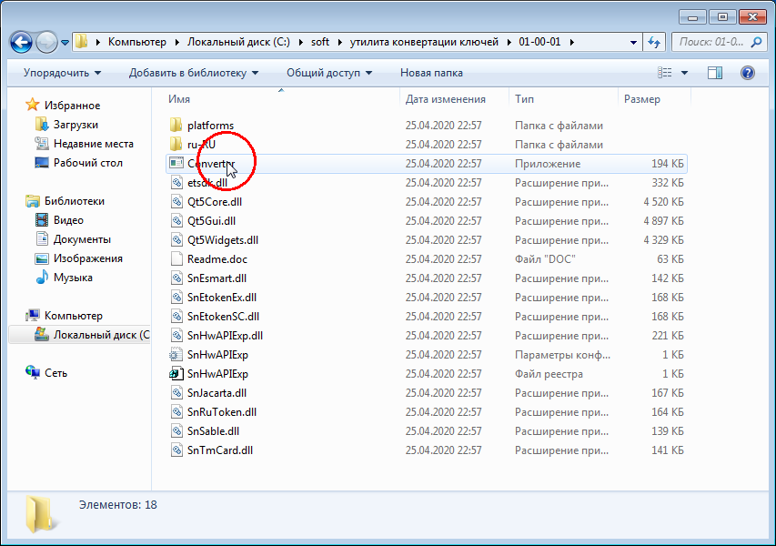

Конвертация контейнера для работы с Электронным бюджетом
Для чего это нужно?
С переходом на ГОСТ Р 34.10-2012 в работе Электронного бюджета обнаружилась интересная проблема: подпись документов работает некорректно, если в выданом сертификате поле Организация длиннее 127 символов.
Для решения этой проблемы техническая поддержка портала предлагает сконвертировать ключ в формат PKCS#15.
Скачать утилиту можно тут.
Конвертация ключевого контейнера
Скачайте архив с программой и распакуйте его любым удобным вам способом в любую папку на компьютере.
Ниже пример распаковки стандартными средствами операционной системы


Запустите Converter.exe 
В открывшемся окне выберите нужный ключ и нажмите Конвертировать

В окошке Сохранение криптоконтейнера выберите нужный носитель - флешку или токен. Ниже дважды введите новый пароль для ключа. Чтобы не путаться можно задать такой же пароль как и у оригинала.
Нажмите Сохранить
Произойдет обращение к ключу-оригиналу. Введите пароль от оригинала

Программа сообщит об успешной конвертации

На флешке появятся два новых файла: TE.cer и TEcont.p15 - это и есть ключ в нужном для подписи в ЭБ формате. Важный момент - при конвертации ключ перезаписывает существующий на флешке сконвертированный ключ. Проще говоря - если вы используете несколько ключей на одном носителе и вам нужно работать с ними в ЭБ - придется найти дополнительные носители.